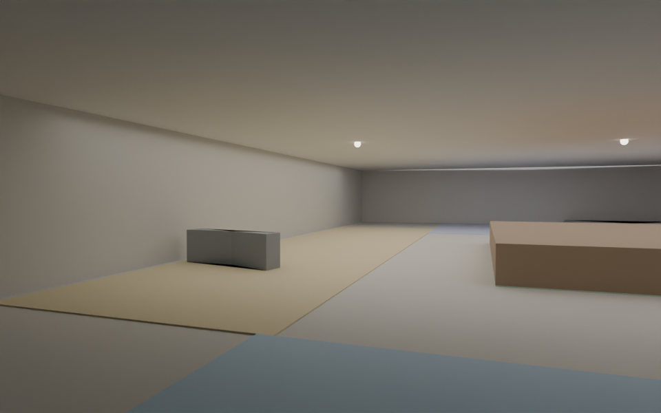
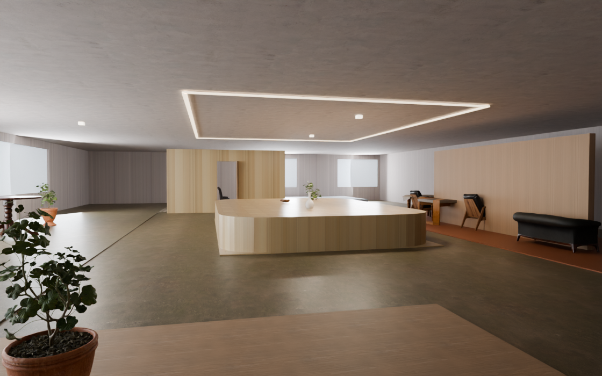
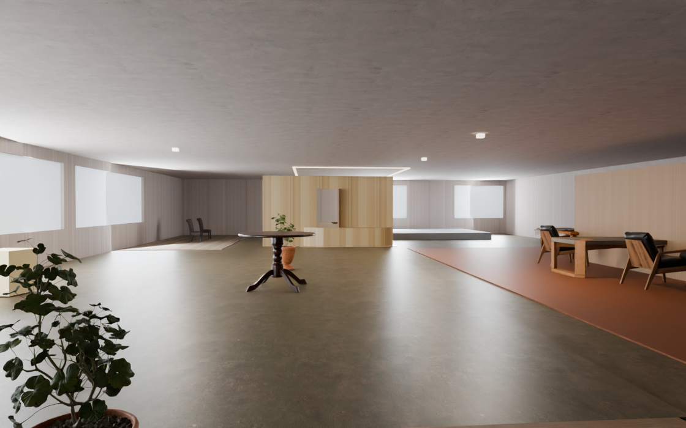
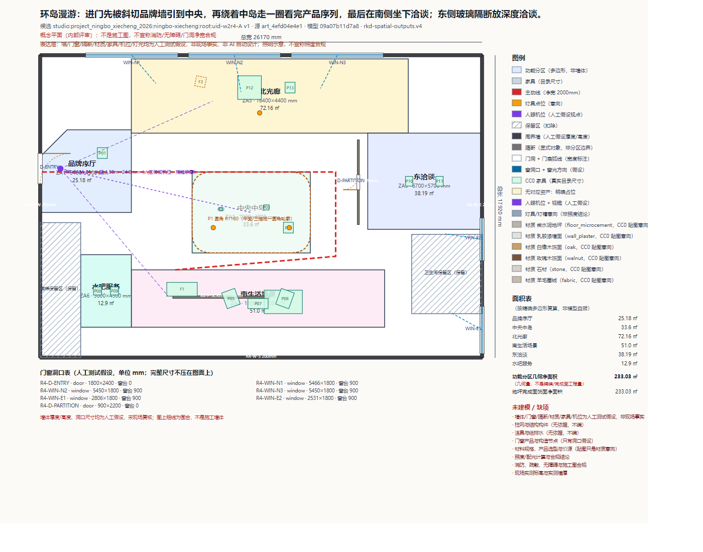
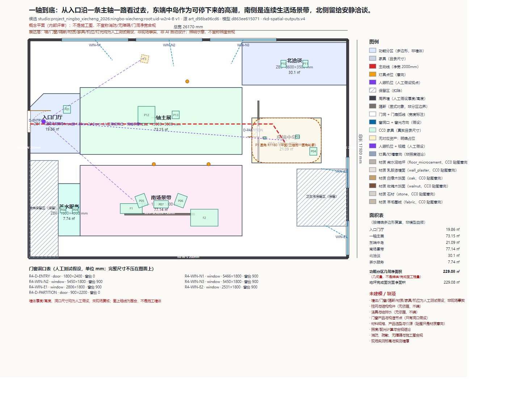

① 入口小修：同层异材重叠不再靠 overlap_declaration 自由文字变成 known 重复工程量；
冲突返回待核、不产 known 总量/试算，只有结构化互斥裁切并被程序实际替换原面才可计量；
补真实 HTTP 负例，原 15 项回归 15/15 保留。② 连续完成资产复用审计、同源围合开口、
真实家具材质、机位灯光与两布局可见成果，未为小修另停一批。
R4 专项 15/15 pass 入口小修 before/after 8/8 15 项回归 15/15 浏览器 passed=True 全量单测 262/262 生成人眼图 2 张 外部调用 0 · 费用 0


| 布局 | 几何净面积 | 围合/开口 | CC0 资产 | 窗光 | 渲染耗时 |
|---|---|---|---|---|---|
| 布局 A | 233.03 ㎡ | 4 墙 / 7 洞口 | 6 套贴图 / 10 件资产 | 5 窗光 | 32.43 s |
| 布局 B | 229.08 ㎡ | 4 墙 / 7 洞口 | 6 套贴图 / 10 件资产 | 5 窗光 | 31.33 s |



| 编号 | 检查项 | 结果 |
|---|---|---|
| R4-A-SUBMIT | 布局 A 由同一生成器产出完整成果 | observed_pass |
| R4-A-ZIP | 布局 A 完整 ZIP/下载 SHA 与 PNG 一致 | observed_pass |
| R4-B-SUBMIT | 布局 B 由同一生成器产出完整成果 | observed_pass |
| R4-B-ZIP | 布局 B 完整 ZIP/下载 SHA 与 PNG 一致 | observed_pass |
| R4-01 | 两种不同布局由同一生成器出平面/场景/人眼图，模型哈希与净量不同 | observed_pass |
| R4-02-A | 布局 A 平面含墙/洞口/家具/材料/机位/尺寸链且文字可读 | observed_pass |
| R4-02-B | 布局 B 平面含墙/洞口/家具/材料/机位/尺寸链且文字可读 | observed_pass |
| R4-03-A | 布局 A 围合/开口/家具在平面与三维读同一 ID 与尺寸 | observed_pass |
| R4-03-B | 布局 B 围合/开口/家具在平面与三维读同一 ID 与尺寸 | observed_pass |
| R4-04-A | 布局 A 真实 CC0 材质/家具/窗光/人眼机位出图 | observed_pass |
| R4-04-B | 布局 B 真实 CC0 材质/家具/窗光/人眼机位出图 | observed_pass |
| R4-05 | 四项受控变更：开口尺寸同步平面/场景且改几何不改量；换材质可追踪；只改相机不改量；只改单价不改几何 | observed_pass |
| R4-06 | 入口小修：同层异材冲突不产 known 总量/试算；原 15 项回归保留 | observed_pass |
| R4-07 | 按 job_id 查询只返回该任务的 revision/artifacts，不串另一布局 | observed_pass |
| R4-08 | 同一 R4 服务代码：取消晚到不复活可显式重试；失败任务不借用他人成果 | observed_pass |
| R4-ENTRY-FIX-BEFORE | 入口小修整改前 8 例缺陷/护栏符合预期 | observed_pass |
| R4-ENTRY-FIX-AFTER | 入口小修整改后 8 例修复/护栏符合预期 | observed_pass |
| R4-REGRESSION-15 | 原 15 项 W2 二次收口回归 | observed_pass |
| R4-BROWSER | 真实 Edge 浏览器：成果可见、下载 SHA、390px、无 JS 错误 | observed_pass |
| R4-FULL-UNITTEST | 全量单元测试 262/262 | observed_pass |
| R4-FRONTEND | tsc --noEmit 与 npm run build EXIT=0 | observed_pass |
| W3-W4-REAL-DESIGN | W3/W4 真实设计与完整客户成果 | not_run |
| AD01-AD08-USER-JUDGEMENT | 固定验收与用户设计阶段确认 | not_run |
site_verified=false、
not_ai_design=true；未现场复核、不冒充系统模型自动设计、不计入 AI 接替设计验收。
精确分区、动线、平台、天花意向来自主系统候选修订（本地夹具，非真实 AI 设计）。
柱网/洁具/构造节点/照度/产品选型缺依据，一律不编造、不补 0。做：入口小修与 HTTP 负例、15 项回归、资产审计、同源围合开口、真实家具材质、机位灯光、 两布局平面 + 各一张人眼图、完整 ZIP/SHA、浏览器与全量回归、修两类真实缺陷。
未做：W3/W4 全套设计成果与真实付费模型调用；天花/立面/三视角/材料实物板/汇总客户 PDF； PG/NAS/账号/租约平台；柱网洁具与照度合规；不代用户确认设计、不改 AD 与阶段闸口。
图片与费用：本机 Blender Cycles CPU 生成人眼效果图 2 张（布局 A/B 各 1）； 平面 PNG 预览 2 张、浏览器桌面/移动截图 2 张、旧灰盒对比 1 张为本地派生。 外部模型调用 0 次、外发图片 0 张、tokens 0、费用 0；密钥未使用、未落盘。